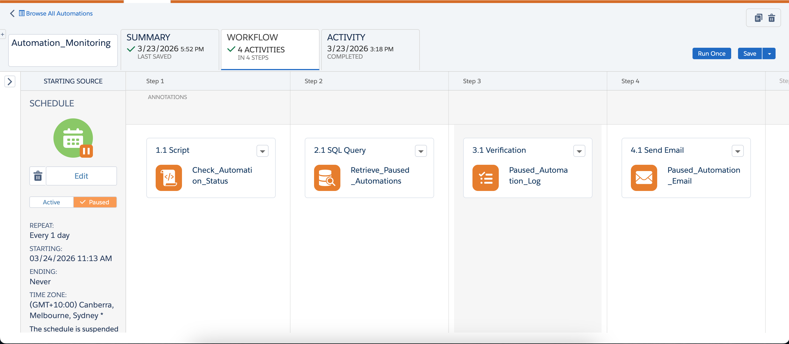
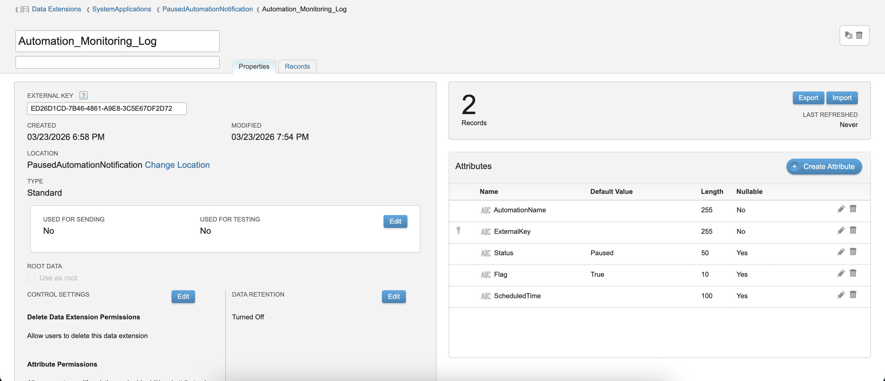
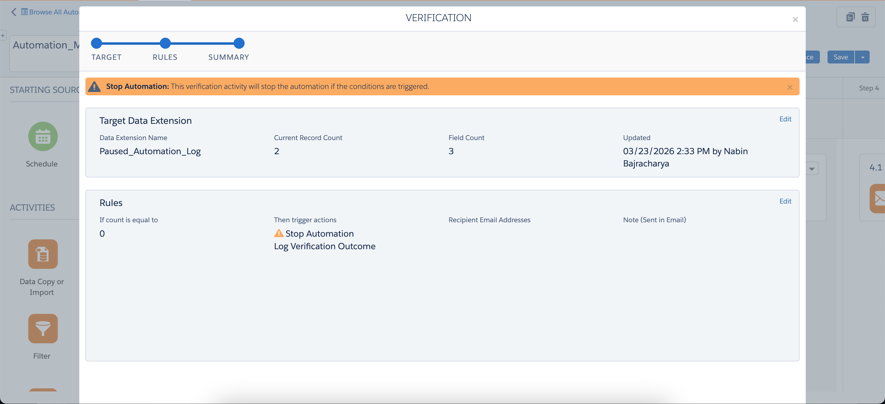
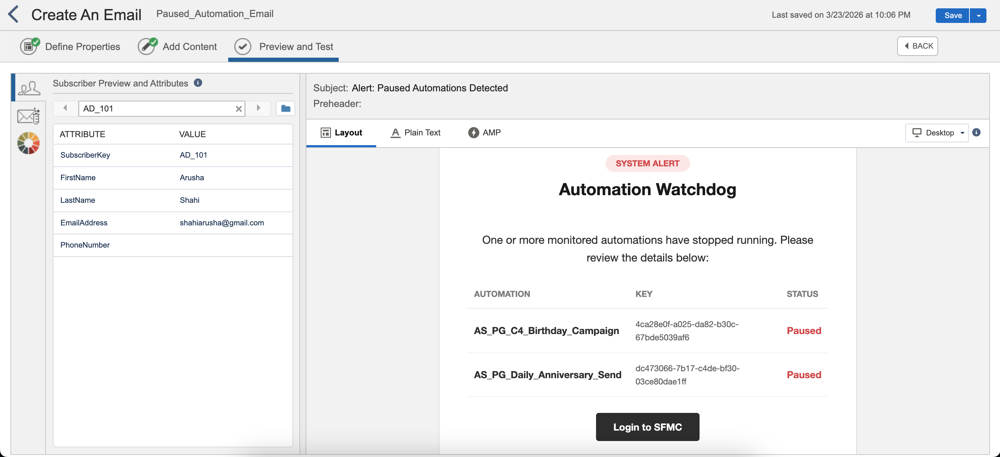

A guide to monitor SFMC Automations
- 01. Setup Data Extensions
- 02. Find Paused Automations with SSJS
- 03. Setup Verification Activity
- 04. Send Email Notification
Have you ever had a critical automation paused, only to find out 24 hours later? In Salesforce Marketing Cloud, keeping an eye on dozens of automations can be a full-time job. To solve this, I built a custom Automation Monitoring System. Here are the 4 steps I took to move from manual checking to automated alerts.

Step 1: Building Data Extensions
First, I needed a place to store the "Truth." I created two Data Extensions:
Automation_Monitoring_Log:
My master list. It contains the ExternalKey of every automation I want to watch, a Flag to turn monitoring on/off, and a Status field. I added critical automations manually in this table.
Paused_Automation_Log:
This table only gets filled via SQL if the system finds a paused automation.

Step 2: The "Translator" Script (SSJS)
The heart of this system is a SSJS activity. Since SFMC speaks in "Status Codes" (like 4 for Paused or -1 for Error), I wrote a script to:
- Loop through my monitored list.
- Request the current status of each automation via the API.
- Translate those numbers into words like "Paused" or "Scheduled."
- Update my Data Extension with the latest info.
This step turns raw system data into actionable information.
Step 3: Filtering the Noise (Verification)
I didn't want to receive a "System is fine" email every single day. I only wanted to know when things were broken. To do this, I added a Verification Activity:
I set a rule: If the Paused Log has 0 rows, STOP the automation. This ensures I only get an email if there's actually a "Paused" automation found by my script.

Step 4: The Dynamic Alert (AMPscript & HTML)
Finally, I designed a clean, professional email. Using AMPscript, the email "reaches into" the Paused Log and builds a dynamic table.
If three automations are paused, the email shows a 3-row table with the names and keys of exactly what needs fixing. It's simple, professional, and saves me hours of manual troubleshooting.

The Result
By combining SSJS, SQL, and AMPscript, I've created a automation monitoring system. It doesn't just tell me there's a problem; it tells me exactly where the problem is, so I can fix it before the morning coffee is cold.
Are you building custom tools in SFMC? Let's connect and share ideas!